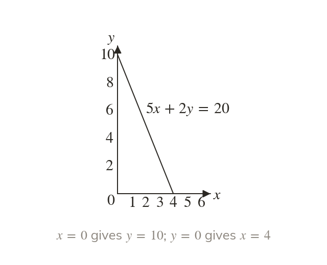
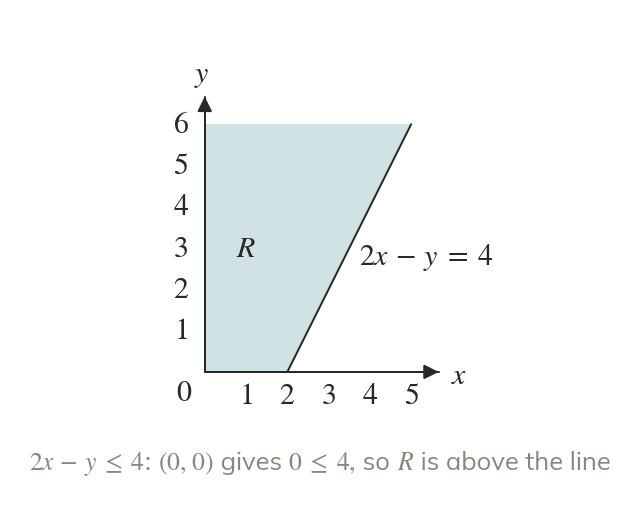
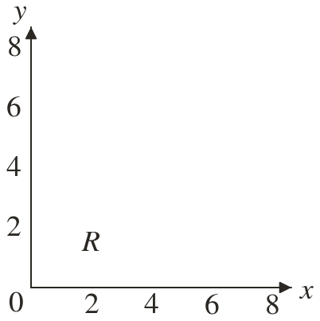
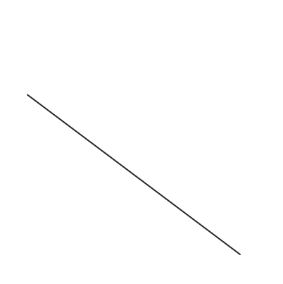
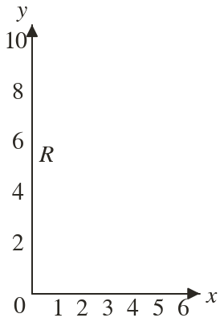
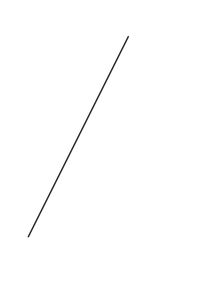
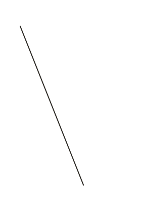
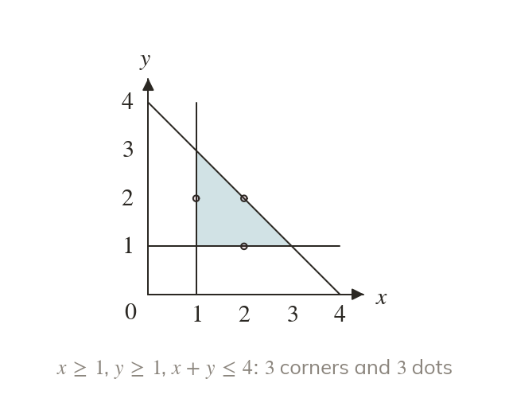
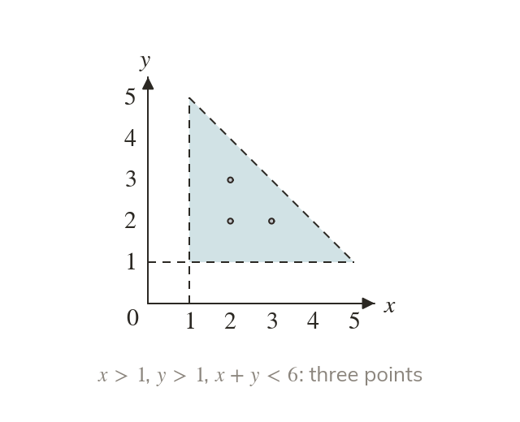

Intercepts draw the line
A boundary like is quickest from its intercepts. Put then put
Real limits rarely arrive as : they look like
And when the unknowns count whole things, such as people or boxes, only the whole-number points in the region are possible answers.
Work down the page at your own pace. Write every answer in your book first, then click to check it.
Read each card, then follow the worked examples one step at a time.

A boundary like is quickest from its intercepts. Put then put

The sign alone does not say above or below. A test point decides the side.





Pick an answer. If it's wrong, the feedback tells you which mistake it was.
Printable worksheet — the questions with room to work.
Read each card, then follow the worked examples one step at a time.

Integer points have whole-number coordinates. Only those satisfying every inequality count.

A point on a dashed boundary is not in the region. A point on a solid one is.
Pick an answer. If it's wrong, the feedback tells you which mistake it was.
Finished? Next lesson: 10H.3.1 Set Notation.
Log in, then search for a code to practise that skill.
Videos, worksheets and more on each part of this lesson.